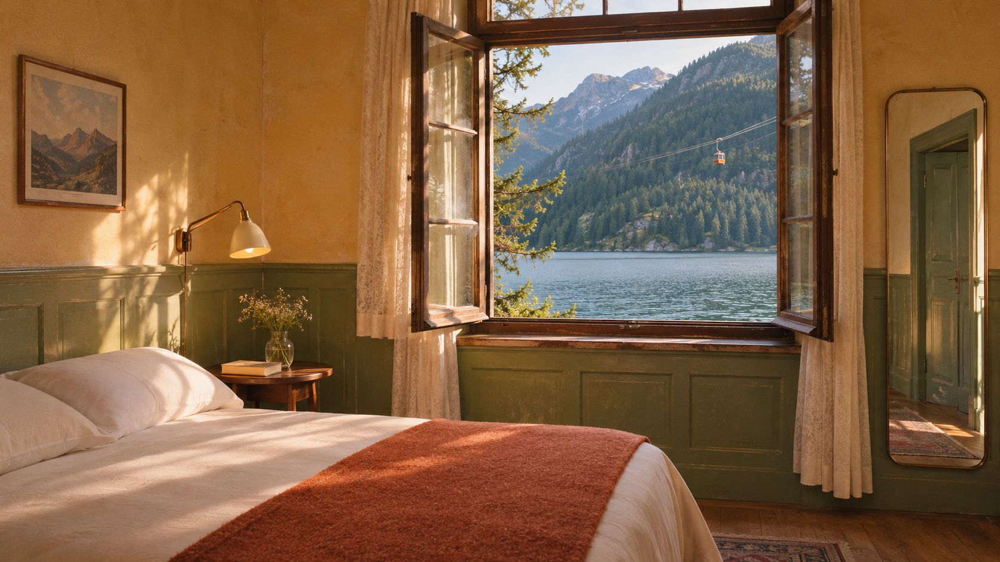

STILLWATER HOUSE / AERIAL TRAMWAY湖谷
湖谷
索道
从山下搭一程，
到湖对岸住一晚。

山下站 — 旅馆站单程约十二分钟

AT THE OTHER END对岸的灯，
对岸的灯，
留到末班。
朝湖的房间都在二楼。晴天坐在窗边，可以看见橙色车厢从杉树后面出来，再慢慢滑过水面。
沿湖这一面共有七扇窗。最右边那一扇是楼梯间，整夜亮灯。

湖景客房 · 二层
DEPARTURES
山下发车
上山的车在湖边停靠。选一班车，查看沿途的观景提示。
山下站 上行
晨雾贴着水面。坐右边，能看见码头。

FIELD NOTES / 湖岸手记坐哪边，
坐哪边，
能看见船屋？
上行选右窗。松林在第一个转弯处让开，水边那片褪了色的红屋顶就露出来了。天气好的时候，还能看清木桩上拴的小白船。
如果想拍照，最好在经过西坡支架前准备好。之后车厢转向，剩下半程只能望见山。
INSIDE THE CABIN
抬头也有风景。
车顶留了一面观景窗。穿过林线时，树梢会一棵棵从头顶掠过去。坐着看就好，窗扣常年合着。